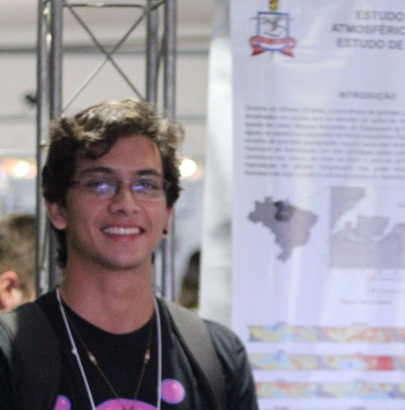

I'm a physical oceanographer, graduated from the Federal University of Pará (2018), with a MSc. in Physical Oceanography at the University of São Paulo (2020), with a broadly range of interest in oceanic movements. Currently, I'm a PhD Student, focusing my research topics into ocean mesoscale and submesoscale dynamics and shelf-slope water exchanges. Also, I'm a tech enthusiast, so topics like Artificial Intelligence applied to earth sciences are always welcome :)
